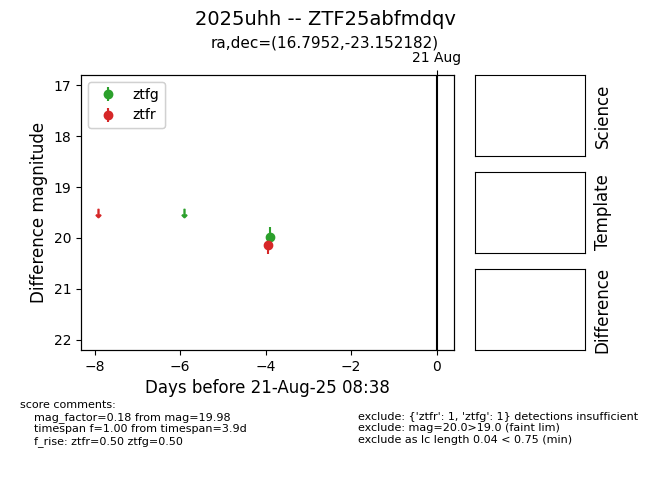

Target 2025uhh at 2025-08-21 08:38, see:
FINK: fink-portal.org/ZTF25abfmdqv
Lasair: lasair-ztf.lsst.ac.uk/objects/ZTF25abfmdqv
ALeRCE: alerce.online/object/ZTF25abfmdqv
TNS: wis-tns.org/object/2025uhh
YSE: ziggy.ucolick.org/yse/transient_detail/2025uhh
alt names
ZTF25abfmdqv (ztf,alerce)
2025uhh (tns,yse)
coordinates:
equatorial (ra, dec) = (16.7952,-23.15218)
galactic (l, b) = (165.6485,-84.66203)
photometry
last ztfg=19.98, ztfr=20.13
1 ztfg, 1 ztfr detections
